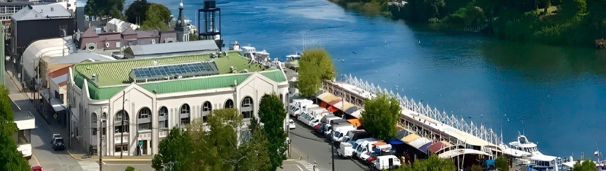
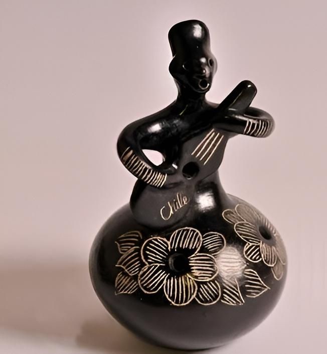
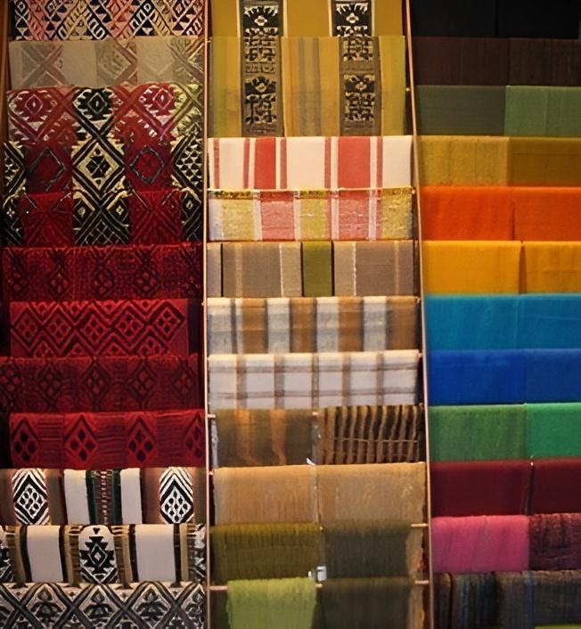
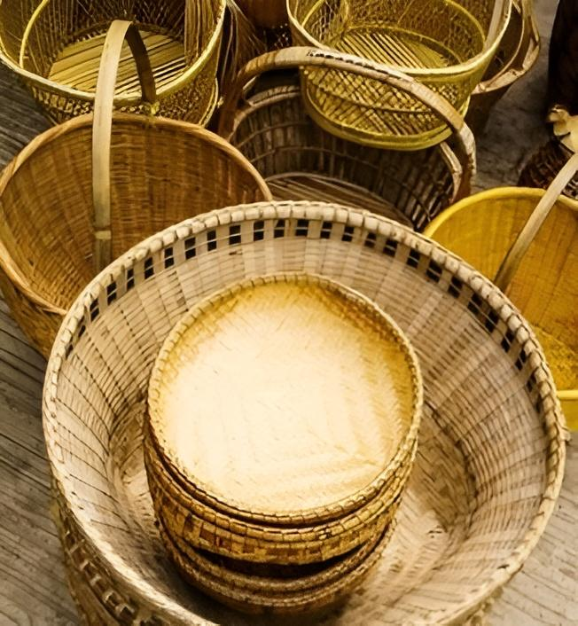

Chile
La riqueza cultural de Chile se encuentra plasmada en sus artesanías, que son un testimonio vivo de sus tradiciones y diversidad geográfica. En el norte, las piezas de cerámica diaguita y los tejidos andinos destacan por sus colores y diseños ancestrales. En el centro del país, los alfareros de Pomaire elaboran figuras y utensilios de greda, símbolo de la identidad local. Hacia el sur, las comunidades mapuches crean hermosos tejidos en lana natural, mientras que en Chiloé sobresalen las cesterías de junquillo y las tallas en madera. Cada una de estas expresiones artesanales refleja el ingenio, la conexión con la naturaleza y el profundo legado cultural de Chile.
Artículos
Figuras de greda
Las figuras de greda de Pomaire, Chile, son piezas artesanales que incluyen ollas, pailas, platos, chanchas, braseros, maceteros y tinajas. Las figuras de greda de Pomaire son reconocidas por su calidad y tipología. Se distinguen por su color rojo y por el brillo de su superficie. La principal región productora de estas figuras es en Melipilla el pueblo de Pomaire.
Nombre: Alicia Méndez
Correo electrónico: lau77gzl@gmail.com
Textiles Mapuche
Los textiles mapuches son prendas tejidas por mujeres mapuches en un telar vertical llamado witral. Son piezas cargadas de significados simbólicos y culturales para el pueblo mapuche. Estos se elaboran con lana de oveja, algodón o paño negro. Se producen principalmente en las zonas rurales de Chile en los pueblos mapuches.
Nombre: Lorenzo Martínez
Correo electrónico: lougmz89@yahoo.com
Cestería de Chupón
La cestería de chupón es una técnica artesanal que consiste en tejer objetos con fibras de la planta del chupón, es una tradición de las comunidades mapuche-lafquenche de Chile. El chupón es una planta endémica de Chile que crece en zonas templadas, al pie de árboles nativos y en quebradas. Sus hojas se utilizan para tejer cestas y bolsas, y sus frutos para elaborar aguardiente. Hualqui al sureste de Concepción, Chile, es una de las principales provincias productoras de estos cestos con técnicas milenarias.
Nombre: Marioli Ortiz
Correo electrónico: mariogtzz@gmail.com